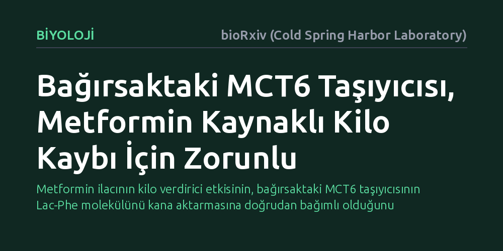

BIYOLOJI · bioRxiv (Cold Spring Harbor Laboratory) · 2026-10-23
Araştırmacılar, yemek ve egzersizle üretilip iştahı baskılayan Lac-Phe molekülünün bağırsaktan kana nasıl geçtiğini ve metforminin kilo verdirme mekanizmasını inceledi. Deneyler, bağırsaktaki MCT6 taşıyıcısının Lac-Phe'yi kana aktardığını ve bu protein olmadan farelerin metformine bağlı kilo kaybına direnç gösterdiğini kanıtladı.
Metformin ilacının kilo verdirici etkisinin, bağırsaktaki MCT6 taşıyıcısının Lac-Phe molekülünü kana aktarmasına doğrudan bağımlı olduğunu gösteriyor.

Tip 2 diyabet tedavisinde yaygın olarak kullanılan metformin ilacı, kan şekerini düşürmenin yanı sıra birçok kişide kilo kaybı da sağlamaktadır. Ancak ilacın bu kilo verdirici etkisinin altında yatan moleküler süreçler uzun süredir tam olarak aydınlatılamamıştı. Son yıllarda yapılan çalışmalar, yemeklerden sonra ve yoğun egzersiz sırasında bağırsakta üretilen "Lac-Phe" adlı metabolitin iştahı baskılamada kilit rol oynadığını göstermişti.
Fakat bağırsak hücrelerinin içinde sentezlenen bu sinyal molekülünün hücre dışına çıkıp kana nasıl karıştığı ve vücuda nasıl dağıldığı bilinmiyordu. Görevi henüz çözülememiş taşıyıcı proteinleri araştıran bilim insanları, Lac-Phe molekülünün bağırsaktan kan dolaşımına geçişini sağlayan özel bir kapı olup olmadığını ve metforminin bu mekanizmayla ilişkisini sorguladı.
Araştırmacılar bu soruyu yanıtlamak için bağırsak hücre zarında bulunan ancak işlevi aydınlatılmamış MCT6 adlı taşıyıcı proteini hedef aldı. Laboratuvar ortamında yürütülen çalışmada, genetik mühendisliği yöntemleriyle bağırsak dokusunda MCT6 proteini üretilmeyen özel fare modelleri oluşturuldu.
Bu fareler ile normal farelerin kandaki metabolit düzeyleri ve kilo değişimleri karşılaştırmalı olarak incelendi. Yemek sonrasında ve metformin uygulaması sırasında kanda dolaşan Lac-Phe seviyeleri biyokimyasal testlerle ölçüldü; aynı zamanda her iki grubun vücut ağırlığı ve kilo kaybı tepkileri düzenli olarak takip edildi.
Elde edilen bulgular, bağırsak hücrelerinde üretilen Lac-Phe molekülünü hücre dışına pompalayıp kana aktaran ana yolun MCT6 taşıyıcısı olduğunu ortaya koydu. Bağırsaklarında MCT6 bulunmayan fareler, kan dolaşımında normal Lac-Phe seviyelerini korumayı başaramadı.
En kritik sonuç ise metformin tedavisi sırasında gözlendi. Normal fareler metformin etkisiyle kilo verirken, bağırsak MCT6 taşıyıcısından yoksun bırakılan fareler ilaca bağlı kilo kaybına karşı direnç gösterdi ve kilo vermedi. Bu sonuç, metforminin kilo verdirici etkisini gösterebilmesi için bağırsaktaki bu taşıyıcı proteinin varlığının zorunlu olduğunu gösterdi.
Bu çalışma, bağırsak hücrelerinden molekül aktarımının (metabolit ihracı) yalnızca pasif bir geçiş olmadığını, tüm vücuttaki enerji dengesini yöneten kritik bir kontrol noktası olduğunu gösteriyor. İlacın doğrudan etkisinden ziyade, bağırsaktan kana bir sinyal molekülü salgılanmasını tetikleyerek sistemik etki yarattığı anlaşılmış oldu.
Bununla birlikte çalışmanın önemli bir sınırı bulunmaktadır: Araştırma henüz yalnızca fare modelleri üzerinde yürütülmüştür. İnsan bağırsak fizyolojisi farelerden farklılık gösterebileceği için, MCT6 taşıyıcısının insanlardaki kilo kaybında da aynı hayati işleve sahip olup olmadığını doğrulamak adına klinik araştırmalara ihtiyaç vardır.